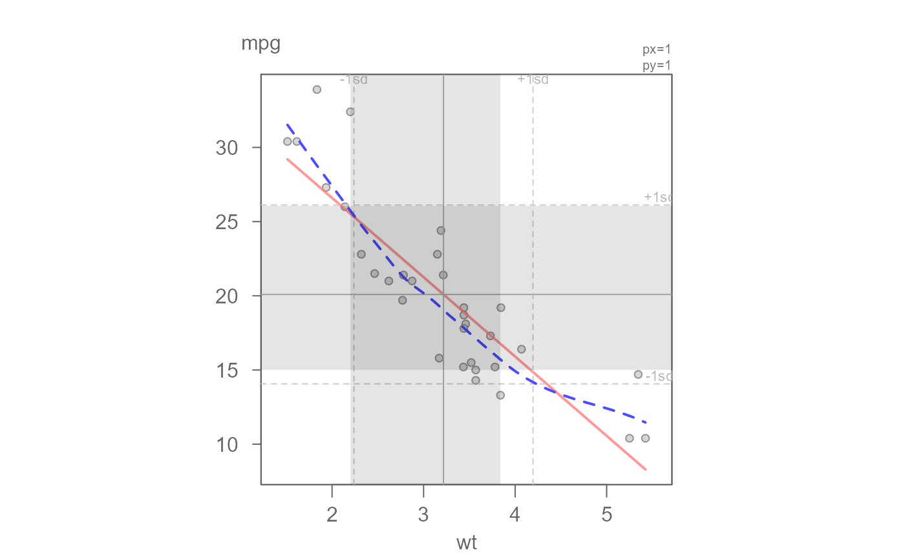
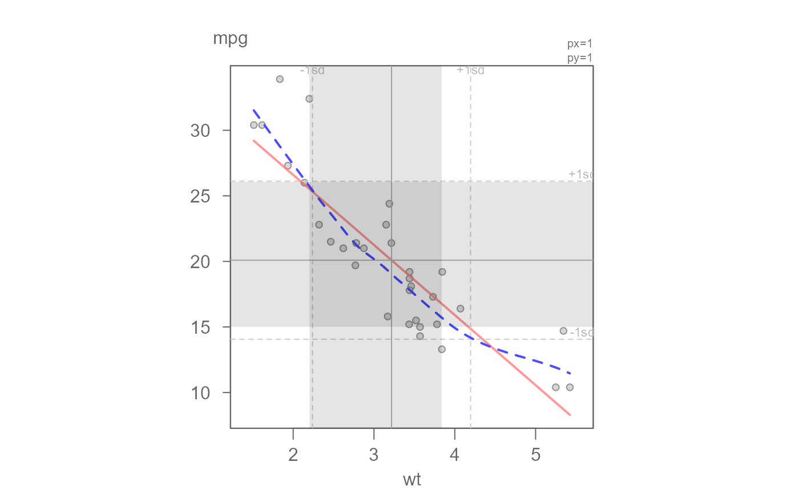

eda_lm generates a scatter plot with a fitted regression line.
A loess line can also be added to the plot
for model comparison. The axes are scaled such that their respective
standard deviations match axes unit length.
Arguments
- dat
Data frame
- x
Column assigned to the x axis
- y
Column assigned to the y axis
- x.lab
X label for output plot
- y.lab
Y label for output plot
- reg
Boolean indicating whether a least squares regression line should be plotted
- loe
Boolean indicating if a loess curve should be fitted
- lm.col
Regression line color
- loe.col
LOESS curve color
- stats
Boolean indicating if regression summary statistics should be displayed
- plot.d
A list of parameters passed to the plot function
- ...
Not used
- loess.d
A list of parameters passed to the loess.smooth function
See also
plot and loess.smooth functions
Examples
# Add a regular (OLS) regression model and loess smooth to the data
eda_lm(mtcars, wt, mpg, plot.d = list(pch=16, col="blue"), loe=TRUE)
 # Modify the loess smooth by adopting a robust fit and adjusting its
# span and polynomial order
eda_lm(mtcars, wt, mpg, plot.d = list(pch=16, col="black"), loe=TRUE,
loess.d=list(family = "symmetric", span=0.5, degree=2))

# Modify the loess smooth by adopting a robust fit and adjusting its
# span and polynomial order
eda_lm(mtcars, wt, mpg, plot.d = list(pch=16, col="black"), loe=TRUE,
loess.d=list(family = "symmetric", span=0.5, degree=2))
